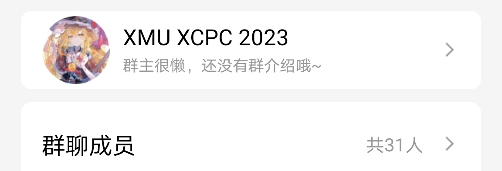
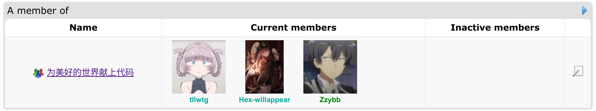
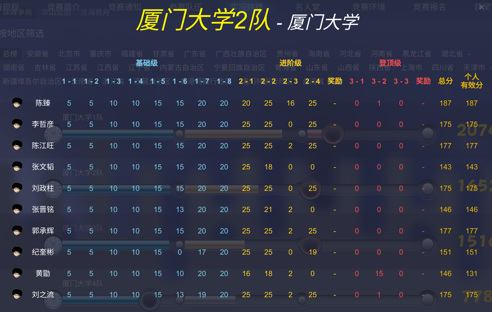
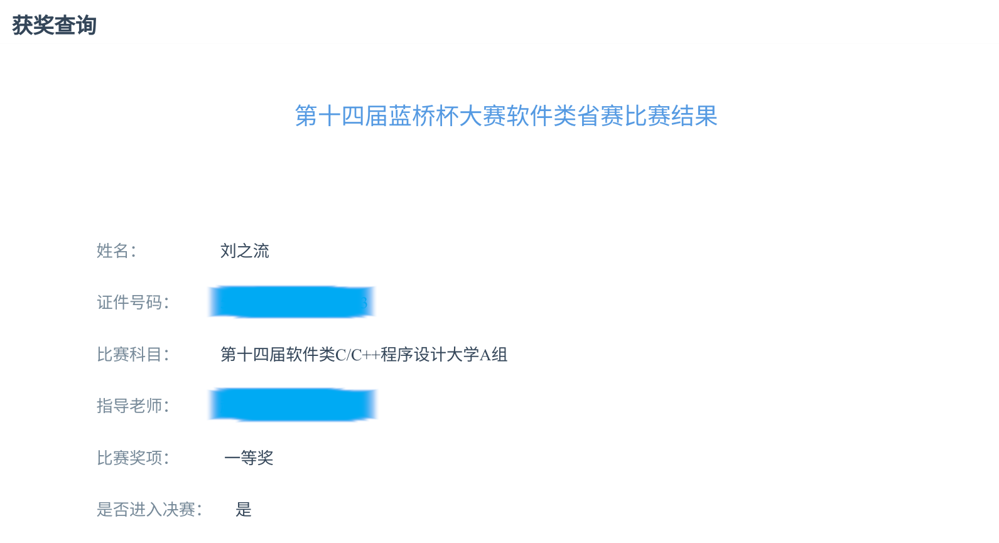

一段奇妙的算法竞赛之旅就此展开……
XCPC
芜湖，经过层层选拔，还有最后的面试——历时半年，tLLWtG 终于进入了 XMU 的 XCPC 团队，可喜可贺可喜可贺。虽然没能在校内选拔赛中打到邀请赛的名额有点遗憾，但是总算迈出了我在 XCPC 上的第一步：）
零基础蒟蒻类目了

这是我目前所在的 ACM 小队（别问我为什么变成青名了）。队伍名“为美好的世界献上代码”的由来非常明显，没错，就是那部十分清奇的异世界番，《为美好的世界献上祝福》（素晴）。正好最近又在播素晴的前传，《为美好的的世界献上爆炎》（听说第三季也会在今年播出，好耶），于是就顺理成章的蹭个热度，用了这样的队名 XD

天梯赛
各种因缘巧合的促使下，我进入了 XMU 的天梯赛二队，在上上周代表虾大参加了比赛。原本以为自己的分数会在队内垫底，没想到最后打的还可以，压线摸了一个个人三等奖，好好好。
赛中出乎意料的被 l1-6 的字符串操作卡住，接着又被 l2-1，l2-2 的模拟封死，一度以为我就要止步于此了，但是经过一番殊死搏斗，还是打完了 l2，其中只跳了 l2-3 的构造。这个时候只剩下十几分钟的时间，已经来不及写构造题了，但是离国三又只差几分而已。hihihi，那就上点不讲武德的东西。通过直接输出”No Solution”和”0”，我又骗到了关键的 3 分，刚好凑到国三线的 175 分。（赛后听人说，l3 的某道题输出 20 可以白拿 15 分 ？。？）

蓝桥杯
最近蓝桥杯的成绩也出来了，虽然早有耳闻蓝桥杯的含金量（），但是在 C 题爆 0 的情况下，我居然还能拿省一耶。奇怪的是好多佬只有省二。那我只能说，暴力骗分真香（）期待 6 月的国赛，同时球球不要让我拿国优。

之后的计划
目前我在算法和数据结构的认识上，应该已经到了入门水准（）。再往后学大概就是二分神所说的“useless algorithm”，当然往后的算法一点也不 useless。只是考虑到我现在的水平，那些东西的优先级没有那么高，写题看到了新算法积累一下就好。优先级比较高的任务是思维训练和对已掌握算法的运用，训练方式主要是打 CF 和 ATC，成效大概会体现在 CF 的 rating 上。
现在的目标是从蓝名起步，到九月份打上紫名。冲冲冲。只要做到比较快的写出 A,B,C,D，应该就能“轻松”达成目标吧（